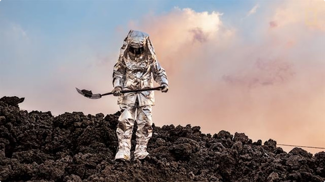

<section class="third__section">
  <div class="third__top__content">
    
    <div class="top__content-texts">
      <h2 class="third__top__content-title">
        "ბოდიოიდები" – ორგანოების ტრანსპლანტაციისთვის შექმნილი ადამიანები
      </h2>
      <p class="third__top__content-text">
        სხეულის ხელოვნური ნაწილების და ორგანოების ზრდის იდეა, ახალი არ არის და
        მედიცინაში უკვე გამოიყენება. თუმცა, მეცნიერებმა, ცოტა ხნის წინ,
        გამოაცხადეს, რომ ადამიანის მთელი სხეულის გაზრდა შეუძლიათ.
        გადანერგვისთვის საჭირო, ადამიანის ორგანოების მწვავე დეფიციტის პრობლემის
        მოსაგვარებლად, მეცნიერები უჩვეულო გადაწყვეტილებებს ეძებენ, მათ შორის
        ისეთსაც, რომელიც შესაძლოა, საყოველთაოდ მიღებული წარმოდგენების და
        მორალური ნორმებისთვის, ნამდვილი გამოწვევა იყოს.
      </p>
    </div>
  </div>
</section>
